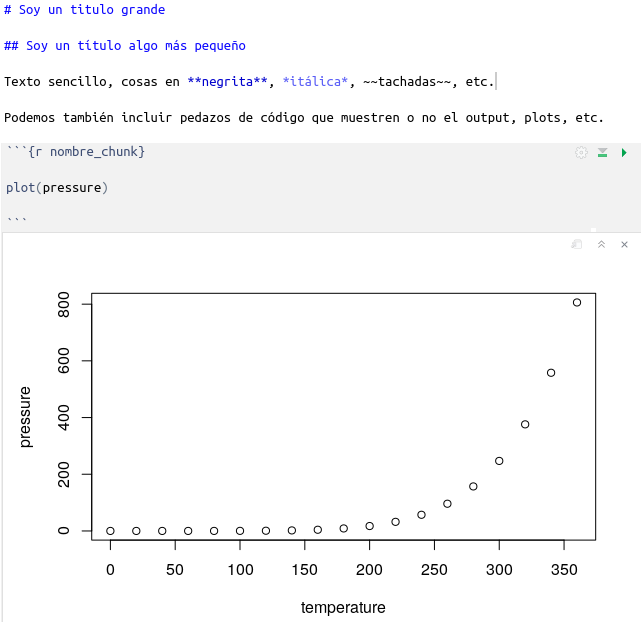

if (!require('afex')) install.packages('afex'); library('afex')
if (!require('correlation')) install.packages("correlation"); library('correlation')
if (!require('corrr')) install.packages('corrr'); library('corrr')
if (!require('dplyr')) install.packages('dplyr'); library('dplyr')
if (!require('DT')) install.packages('DT'); library('DT')
if (!require('ggraph')) install.packages('ggraph'); library('ggraph')
if (!require('grateful')) install.packages('grateful'); library('grateful')
if (!require('here')) install.packages('here'); library('here')
if (!require('gtsummary')) install.packages('gtsummary'); library('gtsummary')
if (!require('knitr')) install.packages('knitr'); library('knitr')
if (!require('papaja')) install.packages("papaja"); library('papaja')
if (!require('parameters')) install.packages('parameters'); library('parameters')
if (!require('quarto')) install.packages("quarto"); library('quarto')
if (!require('remotes')) install.packages('remotes'); library('remotes')
if (!require('renv')) install.packages("renv"); library('renv')
if (!require('report')) install.packages("report"); library('report')
if (!require('rticles')) install.packages('rticles'); library('rticles')
if (!require('see')) install.packages("see"); library('see')
if (!require('sjPlot')) install.packages('sjPlot'); library('sjPlot')
if (!require('stringi')) install.packages('stringi'); library('stringi')
if (!require('tinytex')) install.packages('tinytex'); library('tinytex')
if (!require('usethis')) install.packages('usethis'); library('usethis')
8 Trabajo con Quarto para reportes reproducibles
Paquetes para este capítulo
Dependencias
Instalar Quarto
Quarto es un sistema de publicación de código abierto que funciona con diferentes lenguajes de programación como R o python.
Instalar latex:
Para generar pdf’s necesitaremos tener instalado Latex. tinytex nos ayudará a simplificar el proceso:
tinytex::install_tinytex() # Llevará un rato8.1 Que es la reproducibilidad

La crisis de replicación (replication crisis) se inició con un paper que trató de replicar los resultados de 100 investigaciones clásicas. Esta crisis ha generado un movimiento muy interesante dentro de las Ciencias Sociales y la Psicología en particular. Cada vez es más común aplicar algunos principios de buenas prácticas como compartir materiales, datos y scripts de análisis, para que tanto los revisores como otros investigadores puedan entender, reanalizar, etc. nuestras investigaciones.
Hay algunas organizaciones que han surgido para tratar de mejorar la colaboración, transparencia, y manera de trabajar, como el Psychological Science Accelerator, la Peer Reviewer’s Openness Initiative (PRO), o la Open Science Foundation. Una de las soluciones propuestas para resolver muchos de los problemas actuales pasa por los Registered reports. En estos se da una restructured submission timeline: Before collecting data, authors submit a study protocol containing their hypotheses, planned methods, and analysis pipeline, which undergoes peer review. La última evolución de los Registered Reports es la Peer Community in Registered Reports, la cual establece un sistema de revisión de RR global, independiente de las revistas.
Además de los motivos científicos para trabajar de manera más transparente y reproducible, hay también motivos prácticos. Si trabajamos de manera reproducible, las modificaciones en tablas, gráficas, número de participantes o reanálisis son triviales. En este capítulo vamos a ver algunos pasos fundamentales para tender un workflow que permita y ayude a la reproducibilidad.
8.2 Proyectos de R-Studio
El primer paso empieza por crear un proyecto de RStudio. Al usar proyectos, simplificamos varias cosas, haciendo más fácil compartir nuestro trabajo con otras personas, retomar nuestro trabajo, detectar cambios, etc. Podéis leer algo más sobre esto aquí.
 Para crear un nuevo proyecto de RStudio, haz click en este icono (o File -> New Project), y sigue las instrucciones paso a paso del
Para crear un nuevo proyecto de RStudio, haz click en este icono (o File -> New Project), y sigue las instrucciones paso a paso del New Project Wizard:
8.3 Quarto/RMarkdown, openscience y análisis reproducibles
Quarto quarto o RMarkdown son herramientas que nos permiten combinar texto formateado con código y resultados en un mismo documento (html, pdf, docx, …). Quarto es una evolución de Rmarkdown, y que facilita la interoperabilidad entre R, Python, Julia, etc. La diferencia esencial es que usaremos archivos .qmd en lugar de .Rmd, y que tendremos que instalar quarto en nuestro ordenador. Pero en general, resulta trivial convertir nuestros archivos Rmd a qmd (solo hay que renombrarlos).
Aprovechando la potencia de estas herramientas, algunas personas han creado paquetes para preparar artículos en formato APA, o con las plantillas de decenas de editoriales.
8.4 Sintaxis, chunks de código, tipos de archivo
La sintaxis básica de Quarto / RMarkdown es sorprendentemente sencilla, como se puede ver más abajo. Eso si, lo que hay detrás es toda la potencia de latex, así que el cielo es el límite.

Y como no, tenemos mucha ayuda:
Resumiendo, tienes tres elementos básicos:
8.4.1 Cabecera YAML
Cuando creas un documento .qmd nuevo verás algo similar a lo siguiente en las primeras lineas:
---
title: "Untitled"
---Esta es la cabecera YAML, en la cual se le pueden pasar parámetros para añadir un índice, cambiar formato, y muchas otras cosas.
8.4.2 Markdown
En el resto del documento (con la excepción de los chunks de código), el formato que usaremos será Markdown. Su sintaxis es muy sencilla pero nada tolerante. Podéis ver las bases en la Markdown basics.
IMPORTANTE. Si algo no funciona como esperas:
Si algo no funciona
- Añade saltos de linea entre párrafos.
- Añade dos espacios al final de las líneas.
- Añade un espacio después de #:
- MAL:
#Título grande
- BIEN:
# Título grande
- MAL:
8.4.3 Chunks de código
Los chunks de código están delimitados por:

En su interior, puedes usar código R como si estuvieras en un script de R normal.
Para insertar un chunk de código, solo tienes que hacer Control + Alt + I.
En su cabecera puedes añadir opciones. Hay una cantidad apabullante de opciones. Por ejemplo, en el siguiente chunk:
{r nombre_chunk, eval=TRUE, include=TRUE, fig.height=10, fig.width=12, message=FALSE, warning=FALSE, cache=TRUE, results='asis'}
Parametros chunks
-
echo=FALSE: Esconde el código pero este sigue corriendo -
eval=TRUE: Evalúa el código -
include=TRUE: Incluye el código -
fig.height=10: altura de los plots (en inches) -
fig.width=12: ancho de los plots (en inches) -
message=FALSE: NO muestres mensajes -
warning=FALSE: NO muestres warnings -
cache=TRUE: cachea el output del plot -
results='asis': muestra el output tal cual (importante cuando el output es en latex/pdf)
TRUCO:
- Un chunk llamado
{r setup, include=FALSE}al principio de tu documento .qmd / .Rmd, es ideal para poner tus librerías, lectura de datos inicial, etc.
Ejercicio básico Quarto / RMarkdown
Vamos a empezar creando un nuevo proyecto de RStudio. En este proyecto crearemos un documento con la estructura de artículo científico, que acabará siendo la entrega final de el Workshop.
File -> New Project -> New directory -> New project
Crea un nuevo documento .qmd:
File -> New File -> Quarto document- Selecciona el formato de output
PDF
Ahora hagamos lo siguiente:
- Dale formato de artículo científico, creando las siguientes secciones:
- Title
- Abstract
- Introducción
- Materials and Methods
- Participants
- Materials
- Results
- Experiment 1
- Discussion
- Bibliography
- Pon texto de relleno dentro de cada sección. Para ello puedes usar la función
stringi::stri_rand_lipsum(n_paragraphs = 1)del paquete {stringi}. Los chunks de código deberán ser similares a este:
```{r, echo=FALSE, results=‘asis’}
cat(stringi::stri_rand_lipsum(n_paragraphs = 1))
```
cat(stringi::stri_rand_lipsum(n_paragraphs = 1))
```
- Renderiza tu documento en formato PDF.
El resultado del ejercicio anterior deberá ser un archivo pdf con la estructura general de un artículo científico. Puedes ver el archivo qmd y su pdf resultante en data/files/07-markdown/.
Si el botón Render no funciona, puedes renderizar el pdf usando: quarto::quarto_render("data/files/07-rmarkdown/ejercicio-basico.Rmd", output_format = "pdf")
Ejercicio avanzado
Usando los datos de gapminder, incluye en el apartado Resultados del documento .qmd que has creado:
Una tabla de descriptivos.
Una tabla con los resultados de un análisis sencillo (e.g. una regresión lineal).
Un gráfico mostrando la relación entre dos de las variables.
Podéis ver ejemplos de tablas de descriptivos o tablas de resultados inferenciales en el capítulo anterior, y de gráficas en los capítulos de Introducción a la visualización y Visualización avanzada.
Recuerda empezar añadiendo el chunk de setup {r setup, include=FALSE} donde incluiras las llamadas a librerias necesarias (al menos ggplot2, gtsummary).
El resultado de este ejercicio deberá ser un archivo pdf como el que se puede ver en data/files/07-markdown/.
De nuevo, si el botón Render no funciona, puedes renderizar el pdf usando: quarto::quarto_render("data/files/07-rmarkdown/ejercicio-avanzado.Rmd", output_format = "pdf")
8.5 Avanzado
Puedes crear artículos en formato APA, añadir bibliografía a tus documentos fácilmente, citar los paquetes de R que usas, etc.
8.5.1 Artículos APA con Papaja
install.packages("papaja")
# Create new R Markdown file
rmarkdown::draft(
here::here("data", "output", "mymanuscript.Rmd"),
"apa6",
package = "papaja",
create_dir = FALSE,
edit = FALSE)
# Render manuscript
rmarkdown::render(
here::here("data", "output", "mymanuscript.Rmd"),
quiet = TRUE,
clean = TRUE)Y no olvidemos el paquete {rticles}, que contiene plantillas de decenas de editoriales
8.5.2 Usar bibliografía
Puedes incluir citas en tu documento fácilmente con Rmarkdown o Quarto.
Necesitaras un archivo .bib e incluirlo en el yaml inicial, por ejemplo: bibliography: name_file.bib.
A partir de ahí, puedes citar artículos simplemente incluyendo Blah Blah [@wickham2015; @knuth1984]. o @knuth1984 says blah..
Para saber más:
https://quarto.org/docs/authoring/footnotes-and-citations.html
https://blog.rstudio.com/2020/11/09/rstudio-1-4-preview-citations/
https://rmarkdown.rstudio.com/authoring_bibliographies_and_citations.html
https://www.r-bloggers.com/bibliography-with-knitr-cite-your-references-and-packages/
8.5.3 Citar los paquetes que usamos
¿Debemos citar los paquetes que usamos?
- Respuesta corta, si
- Respuesta larga, la mayoría de los paquetes
Una manera muy sencilla de hacer esto es usando {grateful}.
grateful::cite_packages(
pkgs = "All",
output = "file",
out.format = "Rmd",
include.RStudio = TRUE,
out.dir = "~/Downloads"
)8.5.4 Manejo de dependencias
Usando un sistema de manejo de dependencias renv creamos un snapshot de las librerías usadas actualmente. Es muy importante para garantizar que nuestros scripts correrán en el futuro.
Funcionamiento básico
renv
Si no lo hemos hecho, Instalamos renv:
install.packages("renv")Inicializamos el entorno local de un nuevo proyecto, con una librería privada de R
renv::init()Trabajamos en el proyecto, instalando los paquetes que necesitemos
Guardamos el estado de las librerías usadas en el proyecto en un lockfile (llamado renv.lock),
renv::snapshot()Restauramos el estado de las librerías a partir del lockfile generado por renv::snapshot().
renv::restore()
Ejercicio renv
Usando el proyecto RStudio del artículo científico que estamos creando:
Inicializa
renvIntenta usar una librería nueva (e.g. lee un archivo con
readr::read_csv)Si el paso anterior da un error. ¿Cómo lo puedes solucionar?
Borra la carpeta
renvy restaura el estado de las librerías a partir del lockfile
8.5.5 Shortcuts!
- Alt+SHIFT+K: Ver shortcuts!
- CTRL+SHIFT+M: Pipe
- CTRL+SHIFT+A: Reformat code
- CTRL+I: Reindent lines
8.5.6 Estilo
Es recomendable ser consistente en la manera de escribir código. Habitualmente se recomienda seguir una guía de estilo. Por ejemplo, Hadley Wickham’s Style guide o la guia de estilo del tidyverse.
Bibliografía
Scheel, A. M., Schijen, M., & Lakens, D. (in press). An excess of positive results: Comparing the standard Psychology literature with Registered Reports. Advances in Methods and Practices in Psychological Science.
Xie, Y., Allaire, J. J., & Grolemund, G. (2018). R Markdown: The Definitive Guide. CRC Press. https://bookdown.org/yihui/rmarkdown/
Yihui Xie (2018). bookdown: Authoring Books and Technical Documents with R Markdown https://bookdown.org/yihui/bookdown/markdown-syntax.html
- Mas cosas sobre reproducibilidad: